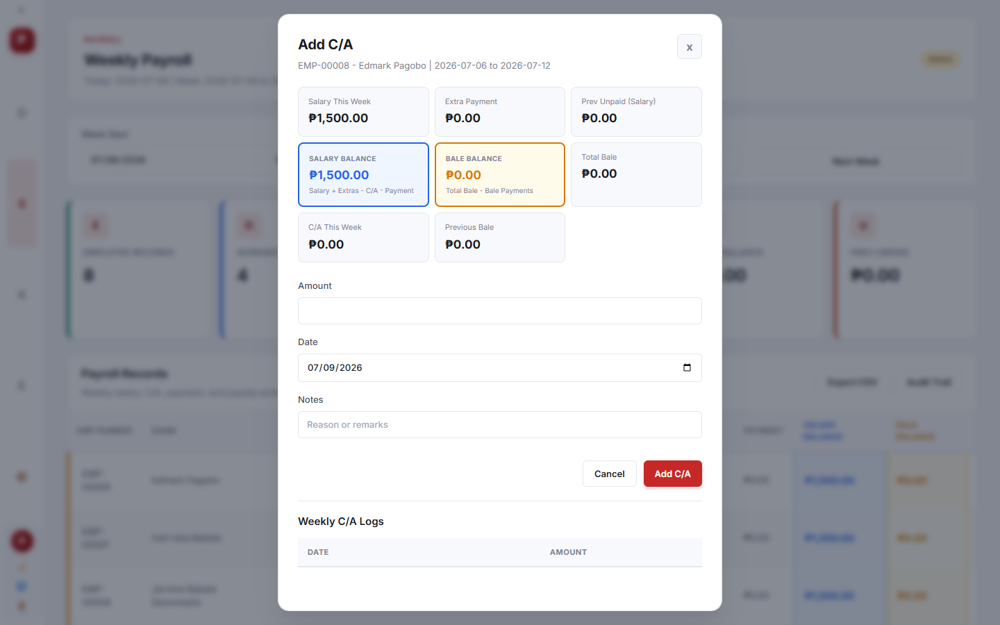
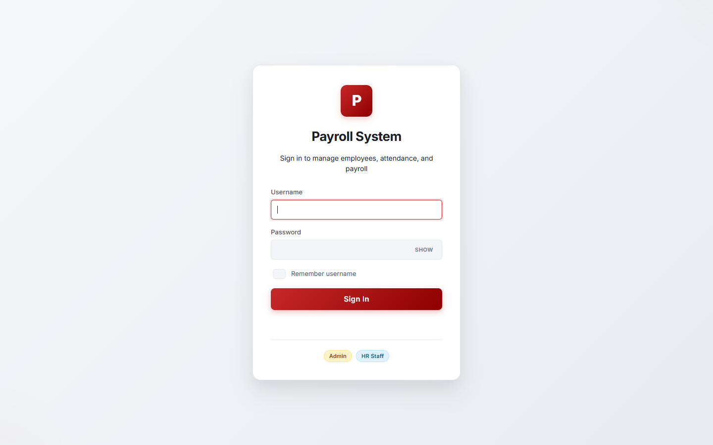
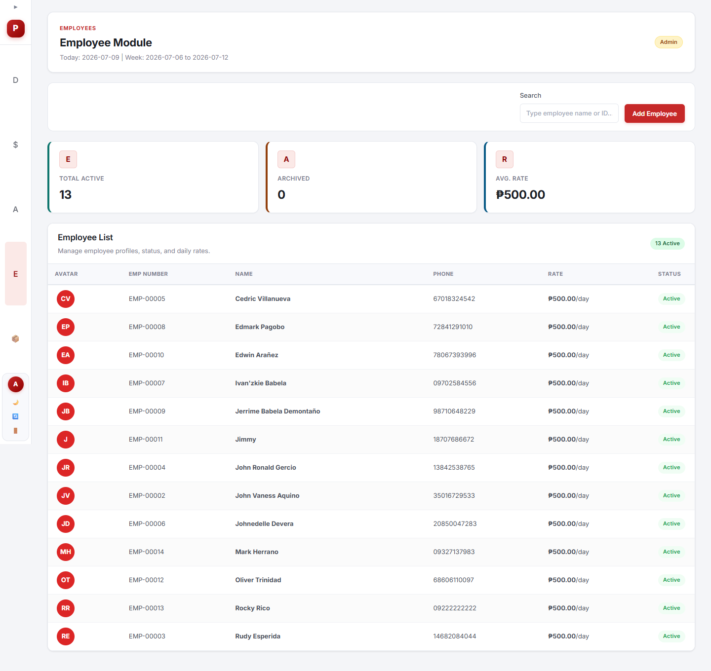
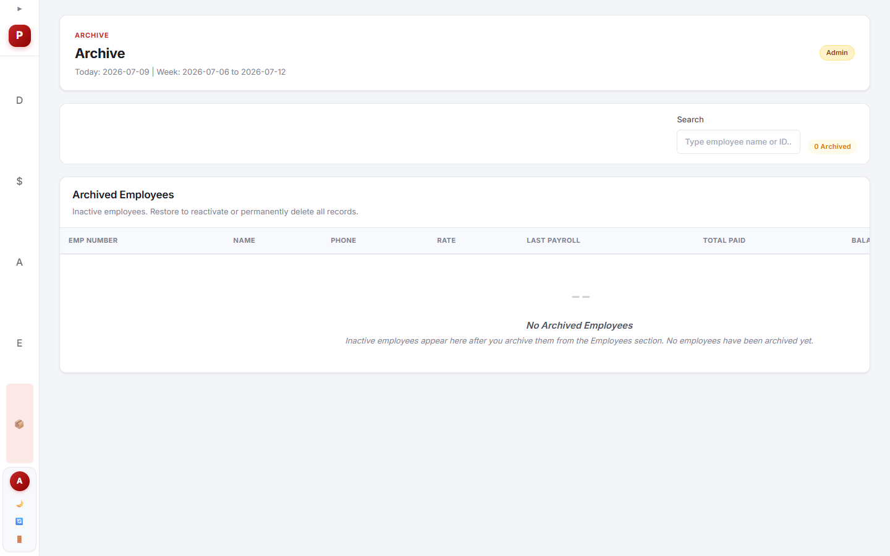
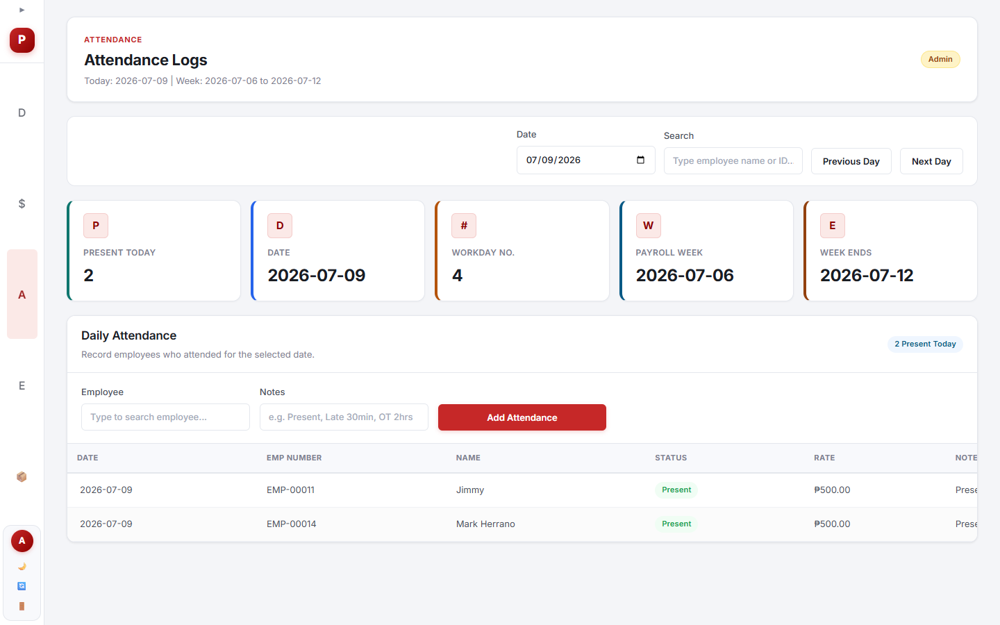
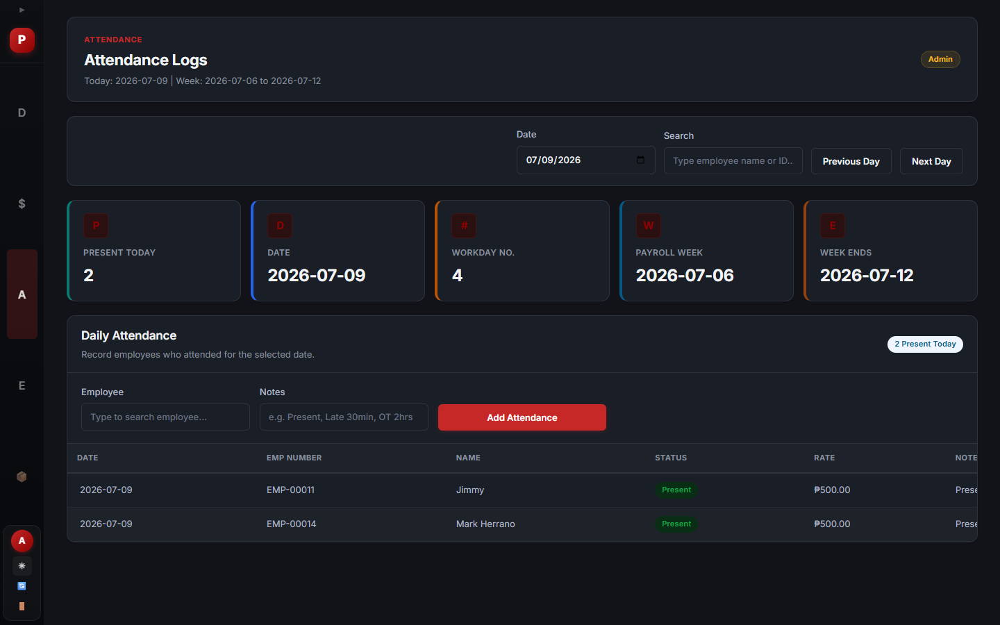
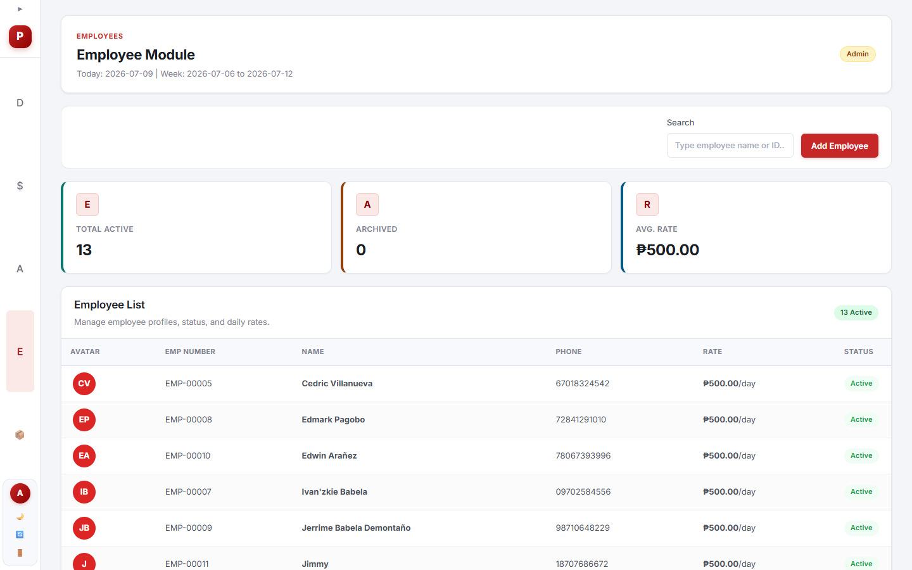
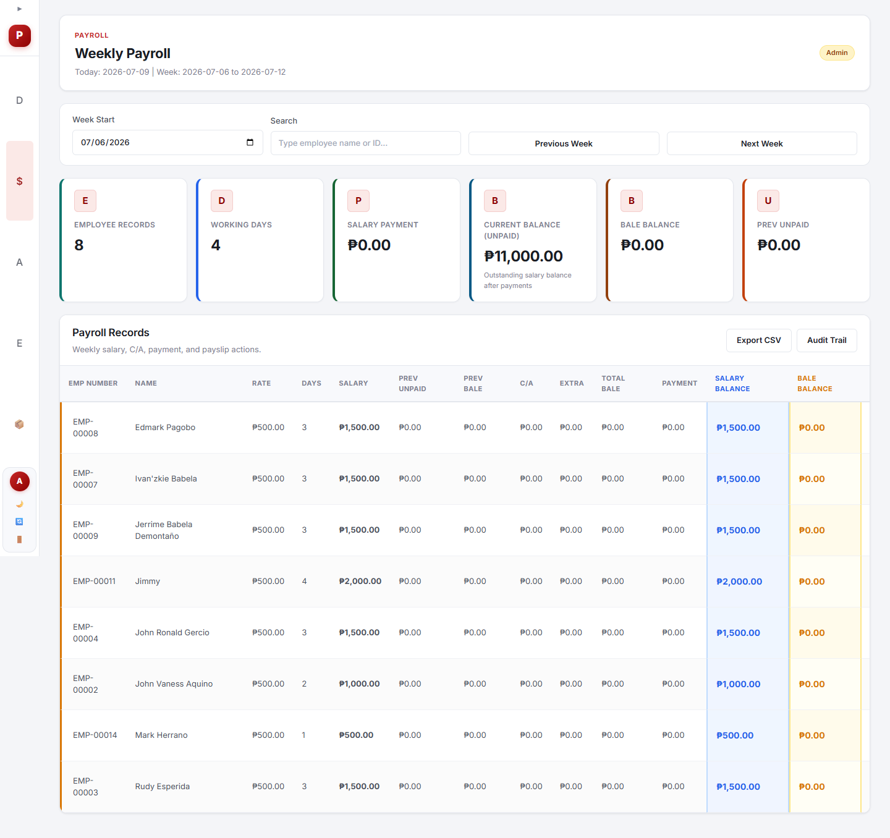

1. Panimula
Ang KVSK Payroll System ay isang web-based na aplikasyon para sa KVSK CCTV & IT Solutions upang mapadali ang pag-manage ng mga empleyado, attendance, sahod, cash advance (bale/utang), at payslip generation.


Tech Stack
| Component | Technology |
|---|---|
| Backend | Node.js + Express 5 |
| Database | PostgreSQL 14+ |
| Frontend | Vanilla JavaScript (SPA) |
| Auth | Session-based with bcryptjs |
| Desktop | Electron + electron-builder |
Ang system na ito ay dinisenyo para sa small to medium businesses. Pwedeng gamitin sa web browser o bilang desktop application sa Windows.
2. Login at Pag-access
2.1 Ang Login Screen
Pagbukas ng system, makikita mo ang login screen na may mga field para sa Username at Password.

2.2 Paano Mag-login
- I-type ang iyong Username (halimbawa: admin o hr).
- I-type ang iyong Password.
- Kung gusto mong maalala ang username, i-check ang "Remember username".
- Pindutin ang "Sign In" button.
Caps Lock warning: Awtomatikong maglalabas ng babala kung naka-on ang Caps Lock habang nagta-type ng password.
2.3 User Roles at Permissions
| Feature | Admin | HR Staff |
|---|---|---|
| View employees | Yes | Yes |
| Add / Edit employees | Yes | Yes |
| Archive employees | Yes | No |
| Permanent delete | Yes | No |
| View audit trail | Yes | No |
| Manage payroll | Yes | Yes |
| Generate payslip | Yes | Yes |
| Cash advance | Yes | Yes |
| Delete records | Yes | No |
| Backup management | Yes | No |
2.4 Default User Accounts
| Username | Password | Role |
|---|---|---|
admin | Set via BOOTSTRAP_PASSWORD | Admin |
hr | Set via BOOTSTRAP_HR_PASSWORD | HR Staff |
Important: Palitan agad ang default password pagkatapos ng unang login para sa seguridad.
2.5 Session Timeout
- Ang session ay 8 oras bago mag-expire kung walang ginagawa.
- May countdown timer sa sidebar.
- Isang session lang bawat user -- kapag nag-login sa ibang device, ma-di-destroy ang lumang session.
3. Dashboard
Ang Dashboard ang unang makikita pagkatapos mag-login. Dito makikita ang summary ng lahat ng mahahalagang datos.

3.1 Summary Cards
| Card | Ibig Sabihin |
|---|---|
| Active Employees | Bilang ng aktibong empleyado |
| Present Today | Bilang ng empleyadong nag-log ng attendance ngayong araw |
| This Week's Salary | Kabuuang sahod para sa linggong ito |
| Total Paid | Kabuuang halaga ng sahod na nabayaran na |
| Remaining Balance | Natitira pang hindi nababayarang sahod |
| Advance Balance | Kabuuang utang (bale/cash advance) ng mga empleyado |
3.2 Quick Actions
May mga Quick Action cards sa ilalim ng dashboard: Payroll, Attendance, Employees, Archive, at Audit Trail (Admin lang). Pindutin ang card para pumunta sa view na iyon.
4. Employee Management
Ang Employee section ay para sa pag-manage ng lahat ng empleyado -- pagdagdag, pag-edit, pag-archive, at pag-upload ng litrato.
4.1 Employee Table

4.2 Pagdagdag ng Empleyado
- Pumunta sa Employees view (pindutin ang 4 sa keyboard).
- Pindutin ang "+ Add Employee" button.
- May lalabas na modal form na may mga field: Full Name, Phone Number (11 digits), Daily Rate, Government IDs (SSS, PhilHealth, Pag-IBIG, TIN), at Pay Period.
- Pwedeng mag-upload ng profile photo (JPEG/PNG, max 5MB).
- Pindutin ang "Add Employee" para i-save.
4.3 Pag-edit at Pag-archive
- Edit: Pindutin ang Edit button sa tabi ng empleyado para baguhin ang details.
- Archive (Admin only): Pindutin ang Archive button para i-soft delete ang empleyado. Pwedeng i-restore sa Archive section.
- Permanent Delete (Admin only): Sa Archive section, pindutin ang "Delete Forever" para permanenteng tanggalin ang empleyado at lahat ng records nito.
Tandaan: Ang permanenteng pag-delete ng empleyado ay hindi na maaaring i-undo. Lahat ng records (attendance, cash advances, payroll) ay tatanggalin din.
5. Attendance Tracking
Dito nire-record ang araw-araw na attendance ng mga empleyado.

5.1 Pag-log ng Attendance
- Pumunta sa Attendance view (pindutin ang 3).
- Piliin ang petsa gamit ang date picker o pindutin ang Previous Day / Next Day.
- Pumili ng Employee mula sa searchable dropdown.
- Pindutin ang "Add Attendance" button.
- Lalabas ang empleyado sa listahan na may "Present" badge.
5.2 Toolbar at Summary
- Date Picker: Mini calendar na may green/red dots para sa attendance status.
- Search: Maghanap ng empleyado sa attendance list.
- Previous/Next Day: Mag-navigate sa ibang petsa.
- Summary Cards: Present Today, Date, Workday Number, Payroll Week, Week Ends.
5.3 Pag-delete ng Attendance (Admin Only)
Pindutin ang Delete button sa row ng attendance record. Hindi pwedeng mag-delete kung naka-lock na ang payroll period.
Tip: Pwedeng mag-log ng attendance nang maramihan gamit ang Bulk Attendance -- pumili ng mga empleyado at markahan silang present sa isang buong linggo.
6. Payroll Management
Ito ang pinakamahalagang section -- dino-compute ang sahod, nagre-record ng payments, at gumagawa ng payslip.
6.1 Payroll Toolbar
Ang toolbar ay may: Week Start picker, Pay Period selector (Weekly/Semi-monthly), Search field, at Previous/Next buttons.
6.2 Payment Statuses
| Status | Meaning |
|---|---|
| Unpaid | Walang bayad na na-record |
| Partial | May bayad pero may natitira pang balance |
| Paid | Buo nang nabayaran |
| Generated | May payslip na at naka-lock ang period |
6.3 Paano Mag-manage ng Payroll
- Pumunta sa Payroll view (pindutin ang 2).
- Piliin ang tamang week gamit ang date picker.
- Pindutin ang "Manage" button sa tabi ng empleyado.
- Sa modal, makikita ang overview ng sahod at transactions.
- Pindutin ang "+ Magdagdag" para magdagdag ng transaction.
6.4 Mga Uri ng Transaction
| Transaction Type | Description |
|---|---|
| Bayad Sahod | Pagbayad ng sahod (amount <= balance) |
| Cash Advance (Bale) | Pagbigay ng cash advance / utang |
| Bayad Bale | Pagbayad ng empleyado sa kanyang utang |
| Dagdag Sahod | Bonus, adjustment, o extra payment |
6.5 Pag-generate ng Payslip
- Sa payroll entry modal, pindutin ang "Gumawa ng Payslip".
- Ang period ay ma-lo-lock -- hindi na pwedeng magbago ng attendance o transactions.
- Lalabas ang payslip na pwedeng i-print (Ctrl+P) o i-save bilang PDF.
- Pwedeng i-Unlock ng Admin kung kailangan ng correction.
Important: Kapag na-generate na ang payslip at naka-lock, hindi na pwedeng magdagdag o magbago ng attendance at transactions para sa period na iyon.
6.6 CSV Export at Bulk Print
- Export CSV: I-download ang payroll data para sa Excel.
- Bulk Print: I-print lahat ng payslip nang sabay-sabay (kung lahat ay generated na).
7. Cash Advance (Bale/Utang)
Ang Cash Advance section ay para sa pag-manage ng mga cash advances (bale) na ibinibigay sa mga empleyado.
7.1 Pagdagdag ng Cash Advance
- Pumunta sa Cash Advance view.
- Piliin ang empleyado mula sa dropdown.
- Ilagay ang halaga ng cash advance.
- Piliin ang petsa gamit ang mini calendar.
- Maglagay ng puna/notes (optional).
- Pindutin ang "Add C/A" o "Update C/A".
Limit: Isang cash advance lang bawat empleyado bawat araw. Hindi pwedeng mag-edit o mag-delete kung naka-lock na ang payroll period.
7.2 View at Navigation
Gamit ang Week Start picker, pwedeng mag-navigate sa iba't ibang linggo. Pareho ang toolbar sa Payroll -- may search, pay period selector, at Previous/Next buttons.
8. Archive
Dito makikita ang mga naka-archive na empleyado. Ang archive ay parang "soft delete" -- pwedeng i-restore anumang oras.
8.1 Mga Action sa Archive
| Action | Description | Admin Only |
|---|---|---|
| Restore | Ibalik ang empleyado sa active status | Yes |
| Payslip | Tingnan ang payslip ng empleyado | Yes |
| Delete Forever | Permanenteng tanggalin ang empleyado at lahat ng records | Yes |
Warning: Ang "Delete Forever" ay permanenteng magtatanggal ng empleyado kasama ang lahat ng records. Hindi na ito pwedeng i-undo.
9. Audit Trail (Admin Only)
Ang Audit Trail ay isang kumpletong talaan ng lahat ng actions na ginawa sa system. Admin lang ang may access.
| Date/Time | User | Action | Entity | Details |
|---|---|---|---|---|
| 2026-07-28 09:30 | admin | Create | Employee | Added Juan Dela Cruz (EMP-001) |
| 2026-07-28 10:15 | admin | Update | Employee | Updated rate: P550 to P575 |
| 2026-07-28 11:00 | hr | Create | Attendance | Marked present on 2026-07-28 |
| 2026-07-28 14:00 | admin | Delete | Cash Advance | Removed C/A P500 for Juan Dela Cruz |
| 2026-07-28 15:30 | admin | Create | Extra Payment | Added P200 bonus for Maria Santos |
9.1 Filters
- Entity Filter -- Pumili ng uri (Employee, Cash Advance, Extra Payment, etc.)
- Action Filter -- Pumili ng action (Create, Update, Delete, Archive, Restore, Permanent Delete)
- Search -- Maghanap sa details ng audit logs
- Date Range -- Pumili ng from-to date
- Export CSV -- I-download ang audit logs bilang CSV file
9.2 Paano Buksan ang Audit Trail
- Pindutin ang "Audit Trail" button sa Dashboard quick actions.
- Pindutin ang "Audit Trail" button sa Payroll section (Admin lang nakakakita).
10. Payslip Generation
Ang payslip ay isang detalyadong talaan ng sahod ng empleyado para sa isang period.
10.1 Nilalaman ng Payslip
| Section | Nilalaman |
|---|---|
| Header | Company name (KVSK CCTV & IT Solutions), address, contact info |
| Period | Panahon (start date - end date) |
| Employee Info | Pangalan, employee number, daily rate, days worked, status |
| Araw-araw na Tala | Bawat araw -- kita, bale, kabuuan |
| Kabuuang Kita | Sahod + Dagdag Sahod + Carry Over |
| Balensa ng Bale | Utang mula nakaraan + bagong bale - bayad bale = natitirang utang |
| Pagkilala | Lagda ng empleyado, posisyon, at petsa |
10.2 Paano Gumawa ng Payslip
- Pumunta sa Payroll view at piliin ang tamang period.
- Pindutin ang "Manage" button sa tabi ng empleyado.
- I-verify na tama ang lahat ng transactions.
- Pindutin ang "Tingnan Payslip" para i-preview (read-only).
- Pindutin ang "Gumawa ng Payslip" para i-lock at i-generate ang final payslip.
- I-print (Ctrl+P) o i-save bilang PDF.
11. Backup Management
- Tuwing 11:00 PM (Manila time) ay awtomatikong nagba-backup ang database.
- Maximum na 30 backups ang iniimbak -- ang pinakaluma ay awtomatikong tatanggalin.
- Ang backups ay naka-imbak sa backups/ directory.
- Pwedeng mag-manual backup (Admin only).
12. Keyboard Shortcuts
| Key | Action |
|---|---|
| 1 | Dashboard |
| 2 | Payroll |
| 3 | Attendance |
| 4 | Employees |
| 5 | Archive |
| Left Arrow | Previous week / period |
| Right Arrow | Next week / period |
| Esc | Close modal / popup |
Hindi gumagana ang keyboard shortcuts kapag nagta-type sa input fields.
13. Dark Mode / Light Mode
Pindutin ang Dark Mode sa sidebar para mag-switch ng theme. Ang preference ay na-sa-save sa browser. Ang login screen ay laging naka-light mode.




14. Sidebar Navigation
Ang sidebar ay may Main Menu (Dashboard, Payroll, Attendance, Employees, Archive), User Info (username, role badge), Actions (Dark Mode, Change Password, Switch User, Logout), at Session Timer. Pwedeng i-collapse ang sidebar para mas maraming space. Sa mobile, nagiging hamburger menu na may bottom navigation bar.
15. Frequently Asked Questions
Paano mag-login kung nakalimutan ang password?
Makipag-ugnayan sa Admin para ma-reset ang password. Pwedeng mag-change password sa sidebar pagkatapos mag-login.
Bakit naka-lock ang payroll period?
Kapag na-generate na ang payslip ng isang empleyado, ma-lo-lock ang period. Pwedeng i-unlock ng Admin kung kailangan ng correction.
Paano mag-print ng payslip?
Pagkatapos i-generate ang payslip, magbubukas ito sa bagong window. Pwedeng pindutin ang Ctrl+P para i-print, o piliin ang "Save as PDF".
Pwede bang mag-delete ng attendance record?
Oo, pero Admin lang ang pwedeng mag-delete. Hindi pwedeng mag-delete kung naka-lock na ang payroll period.
Paano baguhin ang daily rate ng empleyado?
Pumunta sa Employees section, pindutin ang "Edit" sa tabi ng empleyado, at baguhin ang "Daily Rate" field.
Ano ang pagkakaiba ng "Bayad Sahod" at "Bayad Bale"?
- Bayad Sahod -- Pagbabayad ng sahod (bawas sa salary balance)
- Bayad Bale -- Pagbabayad ng empleyado sa utang (bawas sa bale balance)
Ano ang "Bale" o "Cash Advance"?
Ang bale ay perang ipapautang ng kompanya sa empleyado. Ito ay ibabawas sa susunod na sahod. Tinatawag din itong cash advance o utang.
Pwede bang magkaroon ng dalawang session nang sabay?
Hindi. Kapag nag-login sa ibang device, ang lumang session ay awtomatikong ma-di-destroy.
Paano mag-export ng datos para sa Excel?
Pwedeng i-export ang payroll data bilang CSV (pindutin ang "Export CSV" sa Payroll). Pwedeng i-export din ang Audit Trail.